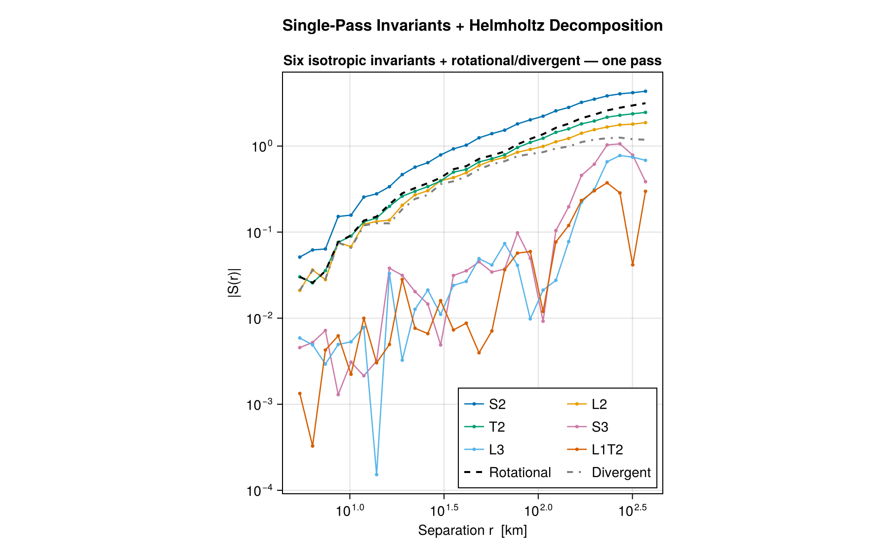
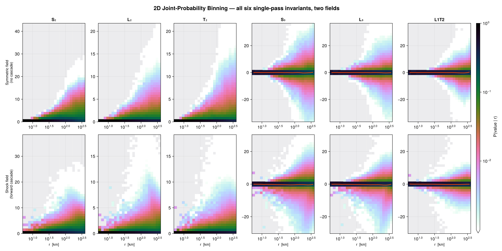

Examples
Runnable scripts live in examples/ and have their own environment:
julia --project=examples examples/simple_2d.jl| Script | Shows |
|---|---|
simple_2d.jl | 2D field, 2nd-order SF, K41 scaling, plotting |
threaded_calculation.jl | ThreadedBackend (OhMyThreads), serial-vs-threaded speedup |
distributed_parallel.jl | DistributedBackend across worker processes |
gpu_acceleration.jl | GPUBackend + reusable GPUSFWorkspace |
gpu_time_slices.jl | native batch over the trailing (D, N, T) axis |
single_pass.jl | six invariants + Helmholtz in one pair pass |
Featured snippets
Single pass: six invariants + Helmholtz

One O(N²) pair pass returns all six isotropic invariants (and, for point-field input, the rotational/divergent Helmholtz decomposition) as a NamedTuple keyed by invariant:
using StructureFunctions: Calculations as SFC, LogBinEdges
x = rand(2, 4096) .* 1.0e4 # (D, N) coordinates
u = randn(2, 4096) # (D, N) velocities
bins = LogBinEdges(collect(exp10.(range(log10(50.0), log10(5.0e3); length = 41))))
res = SFC.calculate_structure_functions_single_pass(x, u, bins; backend = SFC.AutoBackend())
res.S2 # StructureFunction (averaged) for S2; also res.L2, res.T2, res.S3, res.L3, res.L1T2
res.helmholtz # HelmholtzDecomposition2D (rotational/divergent), point-field input only
# Raw sums + counts instead of the averaged view:
raw = SFC.calculate_structure_functions_single_pass(
x, u, bins; output_type = SFC.StructureFunctionObjects.StructureFunctionSumsAndCounts,
)
raw.L2.sums, raw.L2.counts2D joint (distance × value) histogram

using StructureFunctions: Calculations as SFC, StructureFunctionTypes as SFT, LogBinEdges, LinearBinEdges
dist = LogBinEdges(collect(exp10.(range(log10(50.0), log10(5.0e3); length = 41))))
vbins = LinearBinEdges(collect(range(-5.0, 5.0; length = 51)))
sf2d = SFC.calculate_structure_function(SFT.L2SFType(), x, u, dist, vbins; backend = SFC.AutoBackend())
sf2d.sums, sf2d.counts # (n_dist, n_val) joint histogramNative batch over time slices
Pass a (D, N, T) array (shared positions may be a single (D, N) matrix). Geometry is computed once per pair and the batch axis is vectorized — far faster than looping t:
sums = zeros(SFC.SINGLE_PASS_N, length(dist) - 1, length(vbins) - 1, T)
counts = zeros(Int, size(sums))
SFC.calculate_structure_functions_single_pass_2d_batch!(sums, counts, x, u_batch, dist, vbins;
backend = SFC.AutoBackend())See Backends for choosing serial / threaded / distributed / GPU, and GPU Acceleration for the GPU batch path and GPUSFWorkspace.